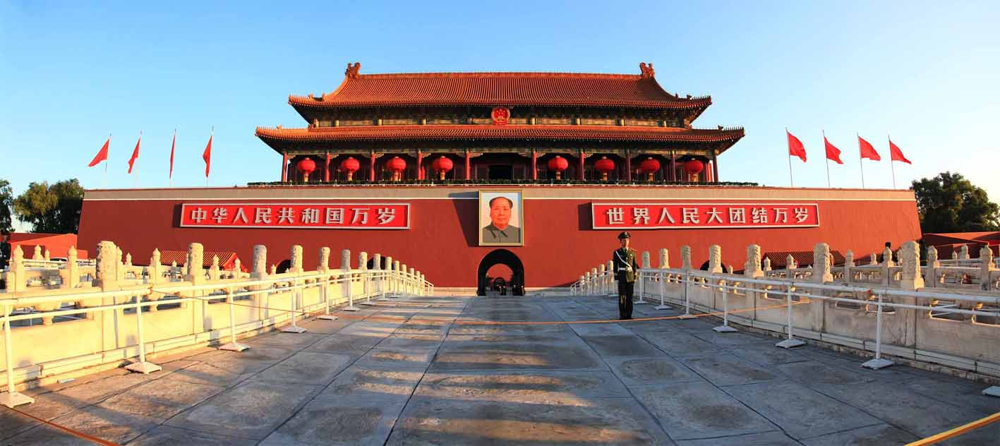
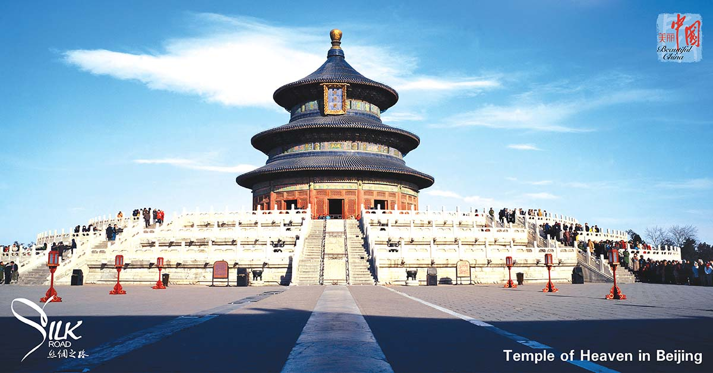

China has a land area of about 9, 634,057 square kilometers, with a land coastline of 18,000 kilometers, and has thousands of islands including the South China Sea Islands. It is the third largest country, in term of land area.
The Great Wall is one of the greatest miracles created by the ancient people as well as the witness of China’s long history. The Great Wall, together with Tian'anmen Square and Terra-cotta Warriors and Horses are recognized as the symbols of China.

he Temple of Heaven (Chinese: 天壇; pinyin: Tiāntán) is an imperial complex of religious buildings situated in the southeastern part of central Beijing. The complex was visited by the Emperors of the Ming and Qing dynasties for annual ceremonies of prayer to Heaven for good harvest.
email: maryguo19@yahoo.com | phone: 403-237-6360 | address: Calgary Alberta Canada